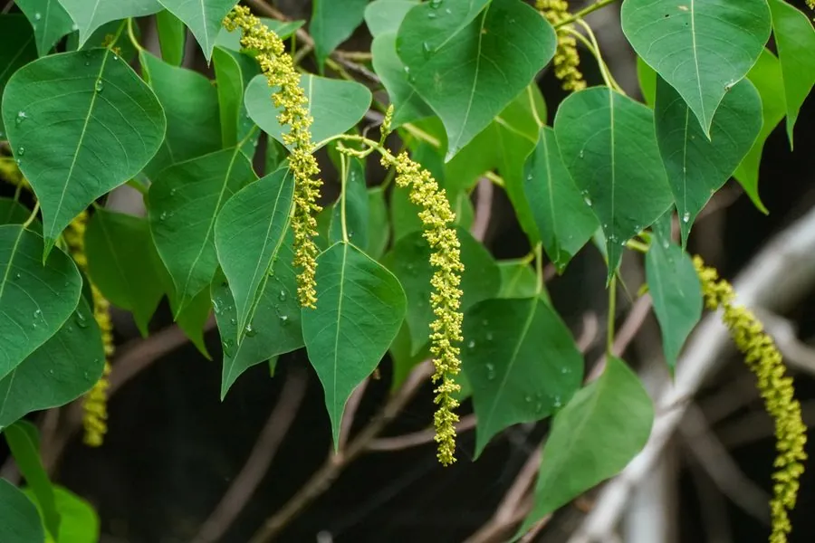

农作物与经济植物 · 植物界
乌桕 Triadica sebifera

乌桕是大戟科落叶乔木，种子外被白色蜡质，可制蜡烛和肥皂，叶色秋季转红，是重要的油料和观赏树种。
- 分类
- 门被子植物门纲双子叶植物纲目金虎尾目科大戟科属乌桕属
- 栖息环境
- 亚热带溪边、田埂与山地，喜光、耐湿
- 地理分布
- 原产中国与日本，长江流域及以南地区广泛分布
- 保护级别
- 暂无评估（栽培作物）
物种志
乌桕是大戟科落叶乔木，株高 10–15 m，树皮灰褐色，树冠圆整，枝条细长，叶片菱状卵形，先端尾尖，秋季变为鲜红或橙红。花小，黄绿色，穗状花序。果实为蒴果，球形，成熟时黑褐色，开裂后露出被白色蜡质的种子。
乌桕原产中国和日本，栽培历史悠久。它喜光、耐湿耐瘠，常生于溪边、田埂和山地。种子外面的白色蜡质可制蜡烛、肥皂，种仁可榨油制油漆，木材可制器具；叶和根皮可入药。秋季叶色红艳，是优良的观叶树种。中国长江流域及以南地区广泛分布，浙江、江西、湖北等地较多，乌桕耐水湿，也耐轻度盐碱，种子采收后需脱蜡处理，秋叶观赏期可达数周。
形态与习性
- 株高10–15 m，落叶乔木
- 叶菱状卵形，秋变红
- 果实球形蒴果
- 种子外被白色蜡质
- 用途蜡烛、肥皂与油漆
- 观赏秋季叶色红艳
趣味知识
- 乌桕种子外的白蜡可制蜡烛，因此有“蜡子树”之称。
- 乌桕秋季叶色鲜红，是优良的观叶树种。
- 乌桕的种子和叶可入药，但需经专业处理。